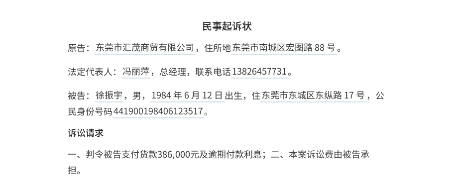
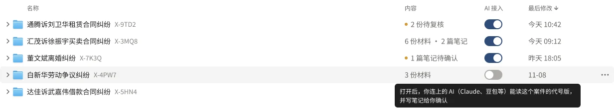

教程 / 开始
快速开始
从拖入材料，到把 AI 写回的稿子换回真名，
四步走完一个案子。
咩了脱敏教程 01 快速开始四步办完第一个案子
快速开始四步办完第一个案子
快速开始四步办完第一个案子视频还在上传，先看下面的文字版。
章节
文字版
1新建案件
00:00 看这一段
打开「脱敏」，把一个案子的材料拖进窗口，或点「添加文件…」。Word、Excel、PDF、扫描件、图片都可以。
一个案子的材料放进同一个案件，同一个人在全案才是同一个代号。
2复核
00:40 看这一段
人名、单位、号码都已标出；拿不准的会停下来，等你选「是，脱敏」或「不是，保留」。看完点「完成复核」。

3交给 AI
01:55 看这一段
在「设置 › AI 接入」接上你常用的 AI，再在「案件」里为这个案件打开「AI 接入」。AI 只读得到代号版。
暂时没接 AI，也可以点「复制代号版」，粘贴给任何 AI。

4换回真名
03:10 看这一段
AI 写回的稿子进到这个案件，在本机打开就是真名；确认后导出 Word。